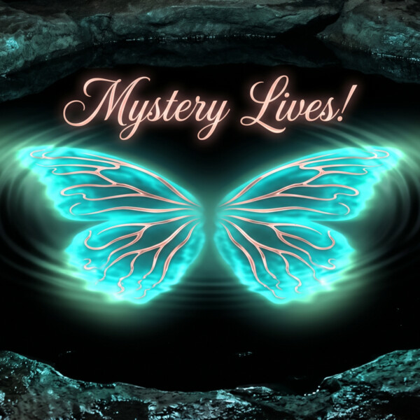

About
I chase knowledge the way some people chase promotions — it’s just how I’m wired. I never stop asking why. I am blind, a 12-year talent acquisition professional, and a daily AI collaborator since early 2026. I use JAWS, NVDA, and VoiceOver to navigate every digital tool I touch.
I am a natural conversational designer. I think out loud, type unfiltered, and constantly refine how AI communicates through real-time interaction. This is not a learned technique — it is how my brain works.
My blindness is a lens that makes me better at this work. When I navigate technology through a screen reader every day, I catch things sighted users never think to test. Combine that with 12 years of talent acquisition instinct, and you get someone who brings the human perspective to a field that desperately needs it.
AI Collaboration Portfolio
MediTrust: First Shipped AI-Directed Production
MediTrust is a professional narrated presentation built entirely through human-AI collaboration. It was produced under Spiritbird Productions™ as its first shipped product. The client called the final deliverable “Phenomenal.”
How it was built: Every element of MediTrust was directed through conversation with AI: the research, the script, the slide design, the narration, and the final packaging.
What this demonstrates:
- Production direction: Ability to direct complex, multi-format production through AI
- Real output: Real deliverable shipped to a real client — not a demo or exercise
- Conversational workflow: Iterative refinement through conversation, not code or visual editing
- Business context: Built through Spiritbird Productions™, establishing a production entity
Startup Investment Proposal: Business Planning & Financial Modeling
A comprehensive startup investment proposal developed for the launch of Spiritbird Productions™. Built through iterative human-AI collaboration, refined across three versions based on stakeholder feedback.
What this demonstrates:
- Financial modeling: Structured a complete business investment case including compensation, startup costs, debt management, and two-year projections
- Stakeholder-driven revision: Iterated from a detailed first draft through three versions, incorporating feedback from multiple reviewers with different priorities
- Strategic communication: Adapted the same core information for different audiences — balancing transparency with discretion based on stakeholder needs
- Business context: Developed as part of the formal launch of Spiritbird Productions™ as an independently funded creative production and AI consulting business
Conversational AI Design
I design through conversation. Not mockups, not wireframes — dialogue. Every product I have built started as a conversation with AI, evolved through hundreds of iterations, and was refined through daily real-world use by a screen reader user who catches every interaction failure sighted designers miss.
My design process: I identify where a conversation breaks down, redesign the interaction in real time, and build persistent rules that govern how AI behaves across sessions. I have authored automation hooks, standing instructions, and conversation logic that determine when AI speaks, what it says, and how it formats responses for accessibility. This is not prompt engineering as a party trick. It is systems design through natural language.
Websites built entirely through AI conversation:
I designed and launched two live websites — this portfolio (johnagravitt.github.io) and spiritbird.live — entirely through iterative conversation with AI. No visual editor. No templates. No sighted assistance. Every design decision — color palette, layout, heading structure, WCAG AAA compliance, image placement — was directed through dialogue, tested with a screen reader, and refined until it worked. A blind person building and shipping production websites through conversation is conversational AI design in its purest form.
Products I co-designed through daily interaction:
- Music Studio: A fully accessible, browser-based audio production environment. Used for real client work including stem separation, remixing, vocal isolation, and mix engineering.
- Cookbook: A digital cookbook with 273+ recipes, organized by category, searchable, and designed for screen reader navigation. Built to become a family heirloom.
- Health Tracker: A wellness tracking system with compound profiles, dosage data, session logging, and personal insights — 280+ sessions logged and growing. Designed through real daily use.
- Game Room: Accessible brain games designed for screen reader users, including word games and trivia formats built for cognitive engagement.
Production and research work:
- FIA Content Curation: Researched, compiled, and organized 19 Friends in Art recordings spanning 2016 to 2025 from ACBMedia.org archives. This involved identifying, verifying, and structuring audio content for accessibility and preservation.
- Radio Clip Archival: Identified and extracted personal radio appearance clips from live broadcast recordings — locating specific moments entirely by ear and memory, navigating dynamic ad insertion that shifts timestamps between listens, and directing AI to produce clean, isolated clips. Research, audio curation, and production direction — all through conversation.
- Audio Tour Creation: Designed and produced an AI-generated audio tour for spiritbird.live — creating an accessible, guided experience for visitors. This is accessibility-first content design: not testing what others built, but building what should exist.
-
Blurred Lines Podcast: Currently in production — a music-centered podcast that explores why songs matter to people and the personal connections behind them. Features conversations with everyday people, each guest given a platform to share something they’re passionate about. All production directed through AI collaboration: guest coordination, episode planning, cover art, and recording setup.

The pattern across all of it: I direct AI through conversation across everything I do — from audio production to job search strategy, document creation, professional communication, and research. This is not button-clicking. It is creative direction through dialogue — the same skill set that drives conversational AI design, applied to real life.
Accessibility + AI
Accessibility is not just about blindness. It is about every disability, every barrier, and every assumption baked into technology that someone forgot to question.
What I catch that others miss:
- Screen reader expertise: I test every AI interface with JAWS, NVDA, and VoiceOver. I know when a heading structure is broken, when a button has no label, when a workflow assumes sight.
- Practical solutions: I do not just flag problems. I describe exactly what the fix should be — in plain language a developer can act on.
- AI output evaluation: I evaluate AI outputs not just for accuracy but for accessibility: Does this actually work for someone who can’t see the screen?
Disability is a strength in this work, not a checkbox. What I navigate every day is exactly what makes AI products better for everyone.
AI Tool Fluency
I work across multiple AI platforms daily, not as a casual user but as someone who pushes each tool to its limits and understands where one ends and another begins.
- Prompt engineering: Crafting precise, iterative prompts that get specific results. I know how to guide AI toward the output I need, and how to adjust when it misses.
- Image generation: Directing AI image generation for professional and creative outputs, including product visuals, presentation graphics, and artistic concepts.
- Conversational design: Shaping AI behavior, personality, and response patterns through sustained interaction. Building AI personas that are consistent, useful, and human.
- Accessibility testing: Navigating and stress-testing AI tools with assistive technology, identifying accessibility barriers, and providing actionable feedback.
I don’t just talk to AI. I make AI better.
The partnership is the product.
Credentials
- Google AI Professional Certificate — all 7 courses completed (Coursera, 2026)
- Daily AI collaborator since early 2026 — continuous, documented human-AI partnership
- 12 years in talent acquisition across recruiting, talent operations, and workforce development
- JAWS, NVDA, and VoiceOver power user — daily screen reader expertise
- Active AI practitioner across productivity, creative production, research, and accessibility testing
- View full professional profile on LinkedIn
Spiritbird Productions™
Spiritbird Productions™ is the creative studio behind everything I build. From professional presentations to audio production and podcast development, every project is crafted with intention, accessibility, and a commitment to amplifying voices that deserve to be heard.
MediTrust, the first shipped client project (June 2026), established Spiritbird Productions™ as a working production entity — proof that human-AI collaboration can deliver real, professional results.
Audio production: Work includes AI-assisted stem separation and remixing for client recordings, and live radio clip extraction from local radio show broadcasts. The clip extraction process involves identifying specific moments from hour-long live episodes entirely by ear and memory, navigating dynamic ad insertion that shifts timestamps between listens, and directing the entire production through natural conversation with AI — iterating on start points, end points, and context clues until the final cut matches what was heard live. That process is conversational AI design in practice, applied to real creative work.
Born to Fly, Built to Create